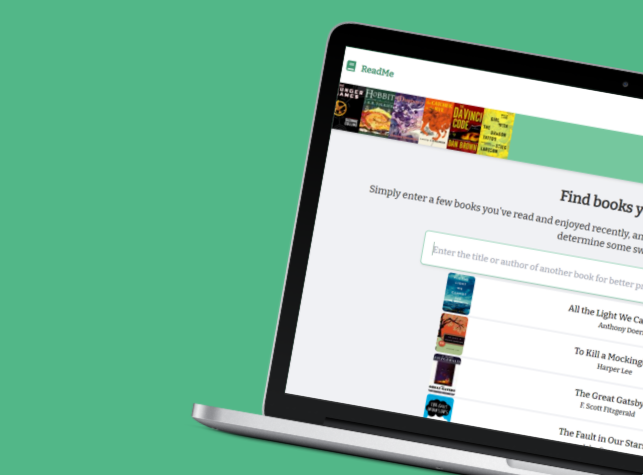

GoldinWebDesign • Github: GoldinWebDesign
Launched after recognizing the need for reasonably priced, attractive yet functional websites in my community, this freelance web development business has allowed me to merge my programming skills and visual arts background to great effect. Built over a dozen websites for medical professionals and small businesses.
SwiftGrade • Github: SwiftGrade
Developed an app for students to easily access information about grades and assignments in Palm Beach County. The app was officially approved by the School District of Palm Beach County Technology Clearinghouse Committee, and supports more than 180 schools with over 6000 active users.
CollegeComp • Github: CollegeCompendium
Built an open-source platform to share high-quality, accessible computer science resources from top colleges with intellectually curious students across the world. Was featured on Morning Brew and reached #4 on Product Hunt with over 1000 resources compiled and 70000 students served in over 179 countries.
Catalyst • Github: Catalyst
Created a fully customizable open-source video-chat component for developers to integrate into their applications quickly and easily. Powering several other student projects including Hours, which by itself drives several thousand meetings a week.
MusicWithAMaster • Github: MusicWithAMaster
Developed a platform to support professional musicians unable to perform publicly during the difficult times of Covid19 by connecting them with passionate students desiring to learn and share their love of music.
Ideastorm • Github: Ideastorm
Built a full MERN-stack site for people to share and find ideas, with the goal of eventually having a collective hive-mind of human potential that anyone can contribute to. Read more about the thought process behind it here.
ReadTogether • Github: ReadTogether
Created a platform for literacy programs focusing on elementary-aged children to take place virtually during Covid-19. Designed an interface that allowed for split-screen reading and video call in sync. Worked with Little Smiles, the PBC Library, and Boys Town to utilize the site.
 ReadMe • Github: ReadMe
Published a book recommendation system using a combination of collaborative and content-based filtering, powered by around 14 million user ratings from Amazon and GoodReads. Deployed an API to generate the recommendations as well as a custom user interface.
TopDeckedTools • Github: TopDeckedTools
Worked on several features through an internship with @LincolnThree for TopDecked, a platform aiming to bring the best tech to the gaming industry. Gained experience in web frameworks, pipelines, and data science tasks such as creating a K-means clustering implementation in TS.
 PearDrop
•
Github: PearDrop
PearDrop
•
Github: PearDrop
Sending a file from one place to another is difficult and frustrating, usually requiring you to send an email to yourself. Created a cross-platform file-transfer application in Flutter using a custom protocol to allow for simple and efficient file transfer when you really need it.
Redoku • Github: UltimateRegexResource
Created a sudoku app using regular expressions for a Google DSC Regex event I presented. Enabled participants of the presentation to learn the syntax of regular expressions and improve comprehension through fun and engaging randomly generated sudoku puzzles.
FindSpines • Github: FindSpines
Created a web interface to automate the annotating of dendritic spines in images using Faster Recurrent Convolutional Neural Networks (Faster RCNNs) and TensorFlow Object Detection. Deployed an API and designed an intuitive drag-and-drop layout.